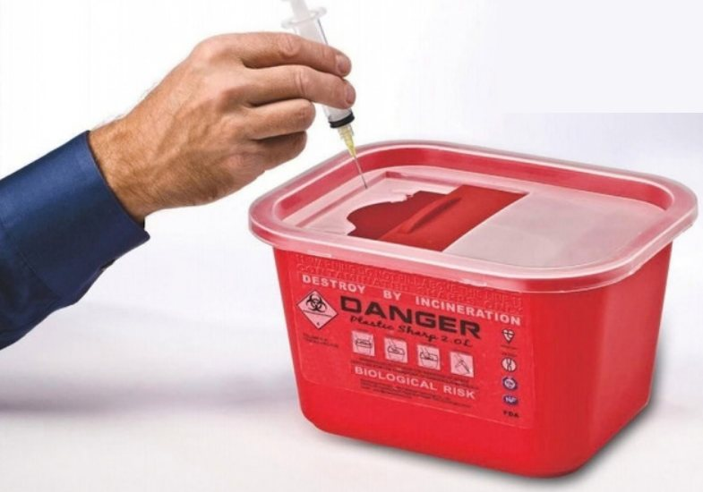
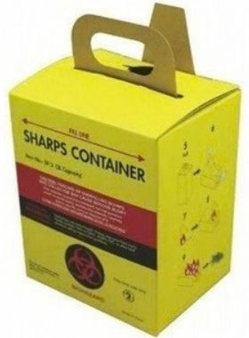

R series · round
0.7, 1.0, 1.5, 2.4 and 3.0 L (R0.7, R1, R1.5, R2.4, R3A/B)
- R0.7: Ø95/75 × 135 mm, 100/carton
- R1.5: Ø140/110 × 150 mm, 60/carton; funnel and built-in needle-removal cap
- Secure perimeter lock; temporary and final closure
For Ontario tattoo & piercing studios
Puncture- and leak-resistant containers with a fill line, from 0.7 L station sizes to 5 L, plus wall brackets. Supplied from Concord, ON.

What Ontario requires
Ontario's personal service settings regulation and the provincial guideline set out how studios handle sharps. A summary, with links to the sources:
Dispose immediately, close to the work. Sharps go into a sharps container right after use, and the container must be in close proximity to where the service is performed.
O. Reg. 136/18 · ontario.ca
What counts as a sharps container. The regulation defines it as puncture- and leak-resistant, with a fill line.
O. Reg. 136/18 · ontario.ca
How it should be used. Biohazard label, one-handed drop-in, easy to reach at every point of use, never filled with disinfectant, never overfilled.
Personal Service Settings Guideline 2019 · ontario.ca (PDF)
When to replace. Seal and replace the container at the fill line or when it is ¾ full.
Personal Service Settings Guideline 2019 · ontario.ca (PDF)
| What the rule asks | What the product has (varies by model) |
|---|---|
| Puncture- and leak-resistant | Described as leak-proof and puncture-resistant on the product pages; polypropylene body |
| A fill line; never overfilled | Visible fill line; translucent lid on many models |
| Close to the point of use | DMSB-F8 bracket, DMSB-R4 shelf and T4.6WM wall cabinet for mounting at the station |
| One-handed drop-in | Counterbalanced door for hands-free disposal on selected models (e.g. DMS-T4.6C) |
| Biohazard label | Biohazard symbol and label details printed on the containers |
| Seal and replace at the fill line or ¾ full | Temporary closure plus a final closure that avoids reopening; perimeter lock |
This table lists product features next to the rules. It is a paraphrase, not a statement of compliance and not legal advice; check the sources and your local public health unit.
Size guide
Pick by how you work. Sizes and carton quantities are from the product pages and catalogue.
For guest spots, conventions and tight stations.
Sizes that sit or mount beside a workstation.
Larger containers and a wall cabinet option.
Not sure which size fits your stations?
Ask us to advise →Products
Colours: red, yellow or customized. Features vary by model.
0.7, 1.0, 1.5, 2.4 and 3.0 L (R0.7, R1, R1.5, R2.4, R3A/B)

0.8, 2.8 and 3.6 L (Y01, Y03, Y04)

2.0, 4.0 and 5.0 L (F02, F04, F05A/B)

1.0 to 5.0 L (T1A, T1B, T2, T3, T4.6A/B/C, T5)

3.0 and 5.0 L (T3, T5)

1.7, 2.0 and 3.0 L (S1.7, S2, SP3)
Mounting & accessories
Slim containers "may be knocked over" on a table. Mounting keeps them upright and within reach.
Steel, white paint · 22.4 × 17.9 × 21.7 cm
Steel · Ø16.8/14.3 × 19.8 cm

For DMS-T4.6A/B/C
Need containers and mounts for every station?
Get a studio quote →Disposal
At the fill line or ¾ full, close it with the final closure. It is designed to avoid reopening.
Off-site disposal packaging must follow the Transportation of Dangerous Goods regulations (PHO IPAC guide).
Transport must be by a company holding a waste management system ECA (Guideline C-4).
Examples of biomedical waste carriers in Ontario, listed for reference, not endorsement: Stericycle Canada, Daniels Health, Medical Solution, ECS Cares. Felix supplies containers; we don't provide pickup. [CONFIRM with Ramin: any carrier partnership]
About
Felix Sharp Container is a local partner for the Dailymag range of sharps containers, based in Concord, Ontario, with delivery across Canada.
[CONFIRM with Ramin: years in business; stock of standard products; reply time]
Request a quote
Tell us about your stations and we'll reply with options and pricing. [CONFIRM reply time]
Free download
A one-page PDF of the guideline points to check at every station: placement, label, one-handed use, fill line and disposal. Print it and keep it at the station.
FAQ
We deliver across Canada. [CONFIRM with Ramin: minimum order and lead time]
No. Ontario's Sharps Collection Program accepts consumer home-use sharps only and excludes tattoo parlours, salons and clinics. Studios need a licensed biomedical waste carrier.
At the fill line or when it's ¾ full, whichever comes first. Seal it with the final closure.
Yes. The DMSB-F8 bracket fits rectangular 2–8 L containers, the DMSB-R4 shelf fits round 1.5–3.6 L containers, and the T4.6WM cabinet holds the DMS-T4.6A/B/C.
Red, yellow or customized, depending on the model.
[CONFIRM with Ramin]